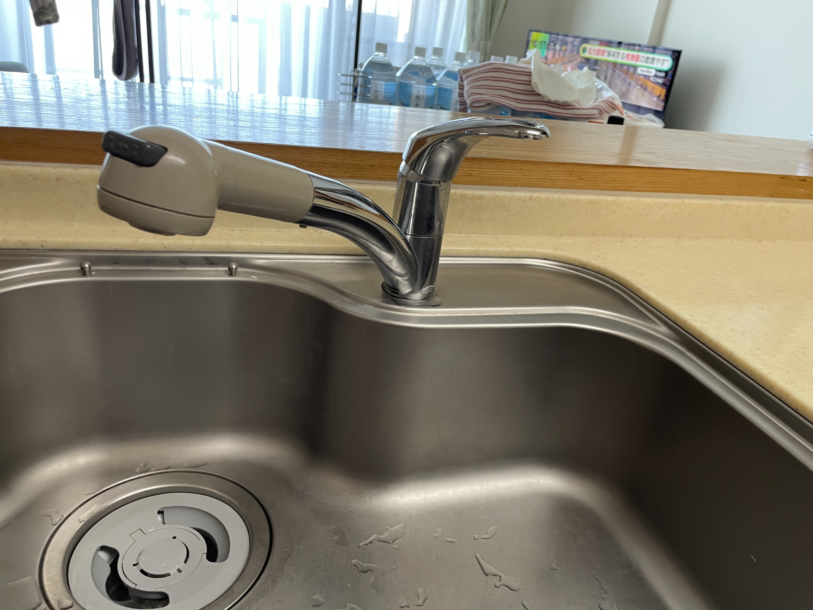
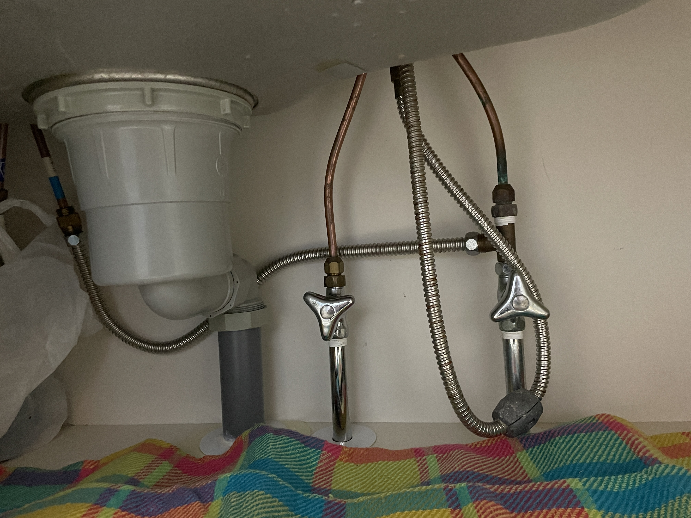
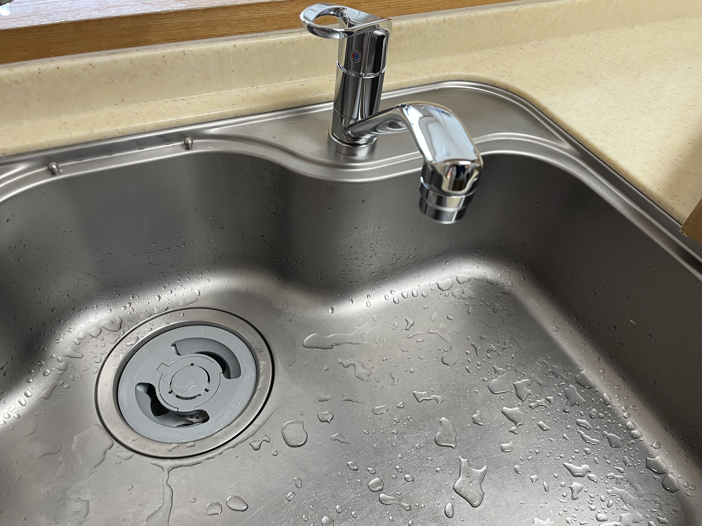

工事実績 / キッチン水栓交換
カートリッジからの水漏れで、キッチン水栓を交換しました
今回は、キッチン水栓を交換した現場をご紹介します。交換のきっかけは、カートリッジからの水漏れでした。この現場では、水栓本体の交換を行いました。施工前の水栓、作業中のシンク下、交換後の水栓の順に、3枚の写真でお伝えします。
施工前：交換前のキッチン水栓

1枚目は、交換する前の水栓です。シンクの上に取り付けられた水栓本体と、吐水口の形が分かります。毎日使うキッチンで水漏れがあると、気になりますよね。今回はカートリッジからの水漏れをきっかけに、水栓本体を交換しました。
ご自宅について相談されるときも、写真に加えて「どこが気になるか」を一言添えていただければ大丈夫です。今の状態を確認してから、対応内容をご案内します。
施工中：シンク下の様子

2枚目は、シンク下を撮影した作業中の写真です。上から見える水栓だけでなく、収納内の配管まわりも写っています。完成後の外観写真とは違う角度から、作業場所の様子をご覧いただけます。
施工後：新しい水栓を取り付けた状態

3枚目が交換後の写真です。施工前と見比べると、水栓のレバーや吐水口の形が変わったことが分かります。使い慣れたキッチンに、新しい水栓が取り付けられました。
キッチンの水まわりも、まずはご相談ください
「蛇口のあたりが気になるけれど、どこを説明すればよいか分からない」という段階でも、ご相談いただけます。水栓全体の写真と、気になっていることを短い文章でお送りください。商品名や型番が分かる場合は、その情報も添えてください。
行徳・妙典周辺の住まいの困りごとを、滝沢の御用聞きが伺います。LINE写真相談は0円です。対応できる内容かを確認し、作業前に金額をご案内します。水まわりの相談範囲と料金目安もご覧いただけます。